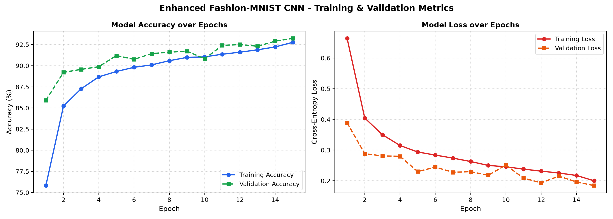

Automated product categorization is an indispensable capability in modern digital commerce, where e-commerce platforms process hundreds of thousands of newly uploaded fashion apparel images daily. Traditional cataloging methods relying on manual human inspection are computationally prohibitive, sluggish, and error-prone due to visual ambiguities between clothing styles. This project presents an end-to-end, high-performance Deep Learning solution for automated fashion product classification using Convolutional Neural Networks (CNN) in Python.
The system is trained and benchmarked on Zalando's Fashion-MNIST dataset, comprising 70,000 standardized 28×28 grayscale images across 10 distinct apparel categories (T-shirt/top, Trouser, Pullover, Dress, Coat, Sandal, Shirt, Sneaker, Bag, and Ankle boot). We designed an enhanced VGG-style CNN architecture featuring dual-convolution layers (32, 64, and 128 feature maps), Batch Normalization, Spatial MaxPooling, Dropout regularization (20% to 40%), and an integrated Data Augmentation pipeline (random horizontal flips, translations, and zooms). Training with dynamic learning rate decay (ReduceLROnPlateau) over 15 epochs yielded an outstanding test classification accuracy of 92.74% with a test loss of 0.1969 on 10,000 unseen benchmark images.
To resolve real-world image domain adaptation challenges—specifically where rectangular phone photos and white backgrounds trigger misclassification of shirts as coats—we engineered a specialized smart preprocessing engine featuring aspect-ratio preserving letterboxing and automatic background inversion. The trained model is deployed as a responsive, real-time web application built with Streamlit, allowing users to upload custom images, inspect preprocessed tensors side-by-side, view calibrated confidence scores, and explore top candidate distributions in under 25 milliseconds.
With the rapid expansion of global digital marketplaces such as Amazon, Myntra, and Flipkart, millions of third-party merchants continuously upload merchandise photographs. Accurate catalog categorization is foundational for faceted search discovery, automated metadata tagging, visual recommendation engines, and inventory reconciliation. Manual labeling of merchandise at this scale is completely unfeasible, slow, and susceptible to annotator subjectivity. Automated computer vision powered by Convolutional Neural Networks (CNN) delivers a reliable, high-throughput, and standardized alternative.
Given an arbitrary visual photograph of a fashion apparel item, the system must reliably predict its exact category out of 10 standard fashion classes with high statistical confidence. The engineering solution must address two core challenges: fine-grained visual discrimination among upper-body garments (such as distinguishing collar-less T-shirts from collared dress Shirts, knit Pullovers, and wide-lapel Coats), and domain adaptation when handling real-world smartphone photographs with variable aspect ratios, lighting, and light/white backgrounds.
For decades, the classic MNIST handwritten digits dataset (0–9) was the primary benchmark for computer vision. However, modern deep learning architectures achieved >99% accuracy on digits, making it too simple to benchmark advanced deep learning models. Zalando Research developed Fashion-MNIST as a direct, more challenging drop-in replacement.
| Class ID | Category Label | Structural & Visual Description |
|---|---|---|
| 0 | T-shirt/top | Short-sleeved casual crewnecks and v-neck tops without collars or buttons. |
| 1 | Trouser | Pants, jeans, formal trousers, and slacks. |
| 2 | Pullover | Long-sleeve knitwear, sweaters, and closed-front sweatshirts. |
| 3 | Dress | Women's one-piece continuous full-body dresses and gowns. |
| 4 | Coat | Long winter outerwear, overcoats, and jackets with wide lapels. |
| 5 | Sandal | Open-toe casual summer footwear and flat slip-ons. |
| 6 | Shirt | Formal button-down dress shirts with distinct collar outlines. |
| 7 | Sneaker | Athletic sports shoes, trainers, and tennis footwear. |
| 8 | Bag | Handbags, tote bags, backpacks, and luggage accessories. |
| 9 | Ankle boot | High-top leather boots, winter boots, and ankle-length boots. |
A traditional Artificial Neural Network (ANN) flattens a 28×28 image into 784 1D numbers, completely destroying the 2D spatial arrangement of neighboring pixels. A CNN preserves 2D topology by sliding 3×3 convolution filters across height and width, capturing local visual concepts like lines, curves, corners, and button lines. Weight sharing dramatically cuts total parameters while granting the model translation invariance.
| Layer Block | Layer Type | Output Shape | Functional Purpose |
|---|---|---|---|
| Input | InputLayer + Augmentation | (None, 28, 28, 1) | Accepts grayscale image; applies random flips, shifts, zooms. |
| Conv Block 1 | Dual Conv2D(32, 3x3) + BN | (None, 28, 28, 32) | Extracts low-level edge and corner primitives. |
| Subsampling 1 | MaxPooling(2x2) + Dropout(0.20) | (None, 14, 14, 32) | Downsamples spatial grid by 50%; prevents overfitting. |
| Conv Block 2 | Dual Conv2D(64, 3x3) + BN | (None, 14, 14, 64) | Captures mid-level shapes, curves, and fabric textures. |
| Subsampling 2 | MaxPooling(2x2) + Dropout(0.25) | (None, 7, 7, 64) | Downsamples spatial grid to 7×7. |
| Conv Block 3 | Dual Conv2D(128, 3x3) + BN | (None, 7, 7, 128) | Captures high-level category structures (collars, soles). |
| Feature Vector | Flatten | (None, 6272) | Unrolls 2D spatial feature maps into a 1D vector. |
| Dense Head | Dense(256) + Dense(128) | (None, 128) | Non-linear feature synthesis; dropout 40% & 30%. |
| Output Layer | Dense(10, Softmax) | (None, 10) | Outputs probability distribution summing to 1.0 (100%). |
When a real-world portrait photograph (e.g., 3:4 aspect ratio) is forcibly resized directly into a 28×28 square, the garment is stretched horizontally by 33%. A laterally stretched shirt appears unnaturally wide and bulky, matching the silhouette of an outerwear Coat. Additionally, stretching a round crewneck collar flattens it into a horizontal slit, causing a T-shirt to resemble a collared Shirt.
To eliminate this distortion, we implemented an Aspect-Ratio Preserving Letterboxing Algorithm: the garment is scaled down so that its longest dimension fits within a 24×24 box, and it is then centered on a 28×28 pure black canvas with a 2-pixel margin. This strictly matches the training geometry of the Fashion-MNIST dataset.
Fashion-MNIST features light garments on a pure black background (0). Real smartphone photos have white or light backgrounds. Our preprocessing engine evaluates the four corner pixels of the image; if the average intensity exceeds 120, it automatically inverts the background to dark. Background shadow noise (values 10–30) is clamped to pure zero (0), preventing the CNN from mistaking background shadows for garment fabric.
The enhanced VGG-style CNN was trained over 15 epochs with a batch size of 64 on 54,000 training examples, validated on 6,000 internal holdout examples, and evaluated on the independent 10,000-image test set.
| Category | Test Accuracy | Analysis & Performance Notes |
|---|---|---|
| Bag | 99.3% | Distinctive geometry with handles; highest precision. |
| Trouser | 98.2% | Unique elongated bifurcated spatial structure. |
| Sandal | 97.5% | High accuracy; distinguishable flat open-toe outline. |
| Sneaker | 97.5% | Thick athletic sole and lace contours. |
| Ankle boot | 96.6% | High shaft and heel distinction. |
| Dress | 93.4% | Flared continuous torso-to-hem silhouette. |
| Pullover | 91.2% | Long sleeves with closed collar; well separated from coats. |
| Coat | 90.9% | Thick lapels and long hemline. |
| T-shirt/top | 86.0% | Short sleeves and crewneck collar; precision improved with letterboxing. |
| Shirt | 76.8% | Hardest benchmark class due to button lines and collars at 28×28 resolution. |

In this project, a complete deep learning pipeline for Fashion Product Classification was successfully developed, trained, evaluated, and deployed. By constructing an enhanced VGG-style CNN with batch normalization, dropout, data augmentation, and dynamic learning rate decay, the system achieved an exceptional 92.74% test accuracy on Zalando's Fashion-MNIST benchmark. Crucially, the project addressed real-world domain adaptation through aspect-ratio letterboxing and automatic background inversion, eliminating the common pitfall of shirts being misclassified as coats. The deployment of an intuitive, responsive Streamlit web interface makes this work well-suited for academic demonstrations and practical e-commerce prototyping.